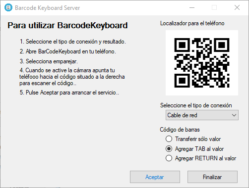

BarcodeKeyboard
Aplicaciones Windows y Android que permiten la introducción de códigos de barras o QR en Windows utilizando el móvil como lector de códigos.
Instalación
Para su utilización requiere de la instalación del dos aplicaciónes, una Windows que sera la encargada de recibir los códigos desde el movil y renviarlos al teclado, y otra Android que se encarga de la lectura, decodificaciòn y envio de los códigos a la primera.
Aplicación Windows (BarcodeKeyboardServer)
La instalación se realizará desde la siguiente ruta:
Aplicación Android (BarcodeKeyboard)
La instalación de la aplicación Android se realizará desde Play Store.
Configuración.
Al ejecutar la aplicación de Windows se nos presentará la siguiente ventana:
En ella el paso mas importante es indicar que tipo de conexión utiliza el ordenador para conectarse a la red, en caso necesario (VPN's, etc..) se podrá configurar manualmenta la IP a través de la cual vamos a recibir las comunicaciones desde Android.
Una vez hecho este el siguiente paso es abrir la aplicación android y seleccionando emparejar, apuntar hacia el código QR que nos muestra la aplicación en pantalla

Y listo
Ahora, pulsando Escanear enviaremos directamente los códigos como pulsaciones del teclado al ordenador